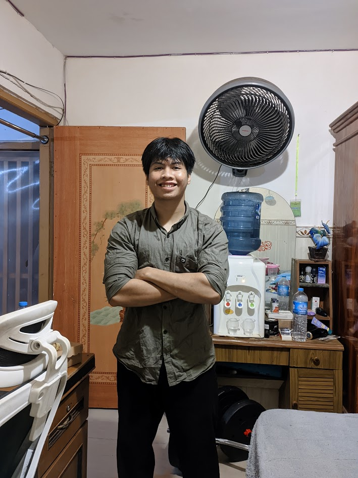

Hi, I’m Ahmad Dzakiudin
building logic into reality.
Programmer | Strategist | Tech Thinker
Tentang Saya
Saya memiliki ketertarikan yang kuat terhadap TEKNOLOGI, sistem yang efisien, serta inovasi futuristik yang dapat mengubah cara manusia berpikir dan bekerja.
Dengan pendekatan yang analitis dan strategis, saya berfokus pada pengembangan tools dan sistem yang mengoptimalkan proses, mengotomatisasi alur kerja, serta menciptakan nilai dari kompleksitas.
Tujuan saya adalah menghadirkan solusi yang tidak hanya fungsional, tetapi juga berkelanjutan dan berdampak nyata.

Keahlian Saya
Skill Kognitif
- Critical Thinking — Analisis bukti & logika sebelum percaya.
- Problem Solving — Menemukan solusi sistematis untuk masalah kompleks.
- Strategic Thinking — Keputusan jangka panjang dengan perhitungan.
- Analytical Thinking — Mengurai pola dari bagian kecil.
- Creativity & Innovation — Menghasilkan atau mengembangkan ide unik.
- Decision Making — Memilih opsi terbaik terutama di tekanan.
- Research & Reasoning — Mengumpulkan data valid & menarik kesimpulan.
Komunikasi & Sosial
- Persuasion & Negotiation — Membujuk tanpa memaksa.
- Storytelling — Menyampaikan info dengan narasi yang mengikat.
- Active Listening — Mendengar untuk memahami, bukan hanya menjawab.
- Empathy & EQ — Membaca & merespon emosi orang lain.
- Body Language Reading — Membaca gesture, ekspresi, nada suara.
- Social Calibration — Menyesuaikan perilaku sesuai konteks sosial.
Teknis / Digital
- Programming / Coding — Membangun logika & instruksi untuk mesin.
- Data Analysis — Membaca data & membuat keputusan berdasar data.
- Video Editing & Animation — Menyusun cerita visual yang engaging.
- UI/UX Design — Membuat antarmuka yang nyaman & intuitif.
- Web/App Development — Membangun aplikasi & situs dari nol.
- Blockchain & Crypto — Pengetahuan aset digital, staking & trading.
- Automation / Scripting — Membuat proses berjalan otomatis.
Fisik / Motorik
- Strength Training / Bodybuilding — Latihan kekuatan & hipertrofi.
- Cooking / Crafting / Gardening — Keterampilan manual & kesabaran.
- Fine Motor Skills — Ketelitian tangan (menulis, melukis, instrumen).
Kreatif & Artistik
- Design Thinking — Menggabungkan logika & seni untuk solusi kreatif.
Emosional & Spiritual
- Self-Awareness — Mengenal kekuatan, kelemahan, dan motif diri.
- Self-Discipline — Konsistensi melakukan hal benar.
- Stress Management — Mengatur emosi & tekanan.
- Resilience — Bangkit kembali setelah kegagalan.
- Philosophical Reasoning — Nalar tentang makna, etika, & kebenaran.
Bisnis & Uang
- Investasi & Trading — Membuat aset bekerja untuk Anda.
- Marketing & Branding — Membuat produk/ide dikenal & disukai.
- Finance Management — Mengatur keuangan pribadi/organisasi.
- Entrepreneurship — Mengubah ide menjadi bisnis nyata.
Meta (Skill Pengganda)
- Learning How to Learn — Cara belajar efektif.
- Time Management — Mengatur waktu tanpa burnout.
- Habit Building — Membangun kebiasaan positif jangka panjang.
- Systems Thinking — Melihat dunia sebagai sistem yang terhubung.
- Pattern Recognition — Melihat pola tersembunyi dari data/kejadian.
Langka & Tersembunyi
- Idea Synthesis — Menggabungkan hal yang tak berhubungan jadi ide brilian.
- Subcommunication — Menyampaikan pesan lewat tone & gesture.
- Teaching / Simplifying — Menjelaskan yang rumit jadi sederhana.
- Behavioral Insight — Membaca motivasi & pola pikir orang lain.
Featured Projects
YT Dubber
Ekstensi Chrome sederhana untuk memberikan dubbing (sulih suara) secara real-time pada video YouTube dengan membaca dan menerjemahkan subtitle yang tersedia. Proyek ini sepenuhnya gratis, open-source, dan menggunakan API bawaan peramban.
Indikator TradingView
Indikator TradingView profesional untuk analisis teknikal dengan sinyal akurat dan real-time.
Manifest & Lua Generator for SteamTools Injector
Alat sederhana dan efisien yang secara otomatis menghasilkan file manifest.json dan skrip .lua yang diperlukan untuk digunakan dengan SteamTools Injector. Ini membantu mempercepat proses injeksi untuk game dan alat berbasis Steam yang menggunakan skrip Lua khusus.
Auto Poke Facebook Extension
Ekstensi Chrome yang bikin lu bisa colek semua teman di Facebook secara otomatis dalam sekali klik.
Clean Page Reader
Ubah halaman web yang berantakan menjadi artikel yang bersih dan nyaman dibaca dengan satu klik. Ekstensi ini secara otomatis menghapus iklan, sidebar, popup, komentar, dan elemen mengganggu lainnya, menyajikan konten utama dalam mode baca yang fokus dan minimalis.
Let's Connect
and build the future together.
Available for collaboration